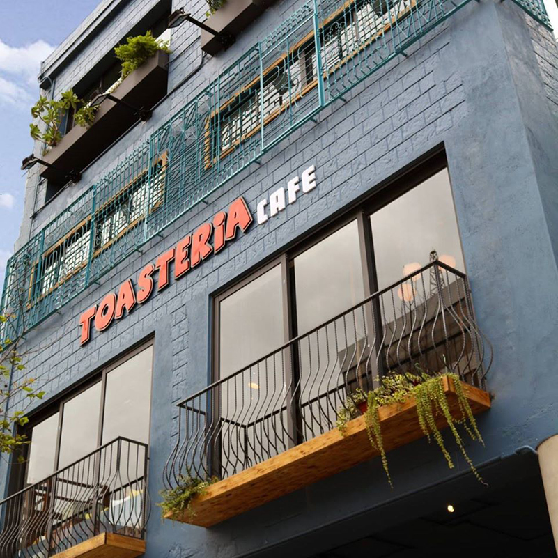

Comida Y Bebida
Toasteria Cafe
Una maravillosa cocina mediterránea con un menú enorme cargado de queso. Tapas, hummus, grandes desayunos eggy, pastas, pescados a la parrilla, ensaladas y paninis. Prueba la manzana Brie con bolsillo tostado de miel y mostaza. También funciona como un pub, con Hoegaarden de barril y un armario lleno de cócteles.
Ahora hay una segunda Toasteria en Dongmen (al lado de la salida 5 de Dongmen MRT) pero esta sucursal de Dunhua, escondida en un carril, es mucho más acogedora. Toasteria ha alcanzado ese feliz equilibrio entre la excelente y auténtica comida occidental y complacer las papilas gustativas taiwanesas. Este lugar siempre se mece con los lugareños.
Rey de las nieves
Snow King es una leyenda, que sirve helados caseros de sabor intenso durante más de 70 años. Hay montones de sabores salvajes, desde el esperado (chocolate) hasta el más extraño (wasabi, codillo de cerdo o cerveza de Taiwán). Toma un banco de la ventana para disfrutar de tu tazón y admirar la vista de Zhongshan Hall al otro lado del camino. Está cerrado los martes entre noviembre y febrero.
RAW
RAW está de moda en Taipei. Tendrá que hacer reservas en línea con al menos un mes de anticipación para este lugar propiedad del famoso chef taiwanés André Chiang. Las cenas de varios platos de concepto de comida han sido llamadas imaginativas, creativas, de múltiples sabores y perfectamente presentadas. La decoración combina el aire decadente con cajones secretos y una barra en forma de bote.

Xiang Chu Xiang
Con una comida tailandesa memorablemente sabrosa, esta es una verdadera joya. El curry de cangrejo amarillo es para morirse. Excelentes precios, servicio sin sentido. Si no está en el menú, no puede tenerlo, y si llega menos de una hora antes del cierre, le dirán que vaya, pero la comida es tan buena que este lugar está atascado la mayoría de las noches.
Din Tai Fung
La tienda de albóndigas al estilo Shangai más famosa de Taipei, el New York Times lo llamó una vez uno de los 10 mejores restaurantes del mundo, ahora es una franquicia mundial. Este es el lugar que lo inició todo, y las colas diarias a la hora de las comidas dan fe de su popularidad duradera. Prueba el clásico xiǎolóng bāo> (albóndigas de cerdo al vapor), hecho a la perfección cada vez. Tome la salida 5 de Dongmen MRT.

También hay sucursales en el patio de comidas Taipei 101 y en los patios de comida de los grandes almacenes SOGO en Zhongxiao Fuxing MRT y en Zhishan .
Le palais
El único restaurante en Taipei que ha sido galardonado con tres estrellas Michelin es un espacio elegante con una iluminación romántica que sirve excelente cocina cantonesa, incluido el dim sum al vapor suave. Su plato estrella, el pato asado, debe pedirse con dos días de anticipación. Las reservas son esenciales y hay un código de vestimenta inteligente. Está dentro del hotel de cinco estrellas Palais de Chine junto a la estación principal de Taipei.
El menú es enorme e incluye algunos platos inspirados en Sichuan y Taiwán. Incluso puede solicitar un menú de Michelin que le costará alrededor de NT $ 10,000.
Comida tailandesa
No pase por alto este modesto lugar en el patio de la Red House Bar Street . Un espectáculo de una mujer (una mujer china nacida en Tailandia), Thai Food sirve algunos de los curries, sopas y fideos más deliciosos del sudeste asiático en Taipei para aquellos con un presupuesto limitado. Por la noche, con las luces de hadas parpadeando y la gente saliendo a la fiesta, tiene un gran ambiente.
Si llegas aquí y está lleno, simplemente ordena y siéntate en cualquiera de los bares del patio.
Loving Hut
Este lindo, luminoso y acogedor lugar con mesas de laminado amarillo ofrece un toque taiwanés a la pasta y los platos de arroz italiano con champiñones, tofu y anacardos. Está justo detrás de la estación MRT Xindian, donde comienza el camino de los carros de comida. Los postres son famosos: el tiramisú vegano ha ganado premios. Tenga en cuenta que solo está abierto los fines de semana y feriados nacionales.
Tienda especial de hielo suave del Polo Norte
Abierto desde 1961, y prácticamente sin cambios desde entonces, este lugar de hielo raspado es una delicia sin lujos. Obtenga una taza de maní, maní, perla y frijol rojo con hielo picado, su éxito de ventas a NT $ 50, y vea pasar el mundo desde una de sus mesas frente a la calle.
Para llegar aquí, gire a la izquierda cuando salga de la estación de MRT, cruce la calle y camine 300 m hasta la calle Zhonghe. Tienen una señal en inglés.
Lan Jia
Lan Jia es ampliamente considerado como el mejor yì bāo en Taiwán. ¿Qué es yì bāo ? Piense en una sabrosa hamburguesa de cerdo a fuego lento con mostaza en vinagre y cacahuetes molidos rellenos dentro de un bollo al vapor. Encontrarás este lugar junto a la larga cola que serpentea afuera.
Tome la salida MRT 4 y gire a la izquierda en el segundo carril (Carril 316).